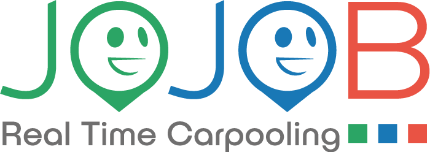

Prossimo progetto
Visual e digital design
Progetto in sviluppo
Uno spazio dedicato ai prossimi progetti sviluppati durante il mio percorso nella UX/UI design.
Presto disponibilePortfolio
Una selezione di progetti dedicati alla comprensione dei bisogni, alla definizione dei flussi e alla costruzione di esperienze digitali chiare, accessibili e coerenti.
Esplora i progettiCase study

UX/UI Design · Case study
Redesign dell’esperienza desktop e mobile di una piattaforma dedicata al carpooling aziendale, dalla ricerca UX fino alla progettazione dell’interfaccia finale.
Esplora il case studyVisual e digital design
Uno spazio dedicato ai prossimi progetti sviluppati durante il mio percorso nella UX/UI design.
Presto disponibileContatti
Sono disponibile per collaborazioni, progetti UX/UI e opportunità professionali.